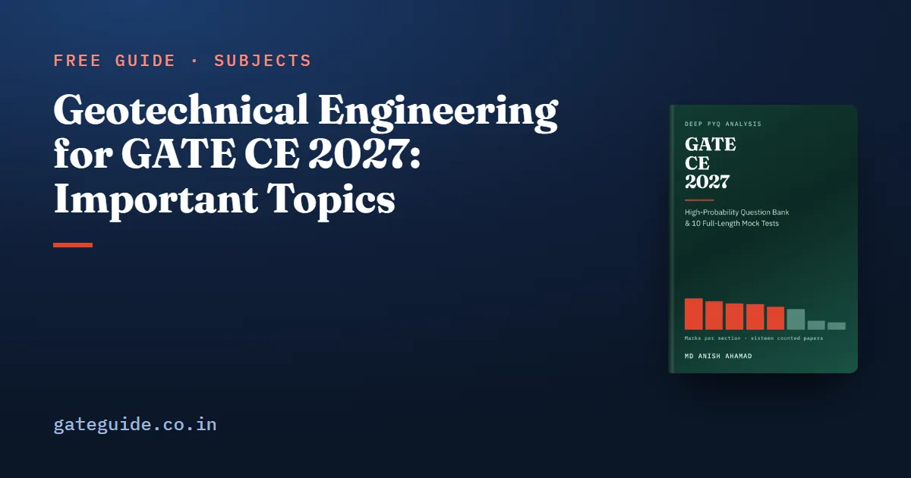

Geotechnical Engineering for GATE CE 2027: Important Topics

Geotechnical Engineering is the second-largest technical section of the GATE Civil paper and the steadiest of the heavy ones. Counted question by question across all sixteen papers from 2019 to 2026, Set 1 and Set 2 in each year, it averages 13.8 marks a paper, and no paper gave it fewer than 12 or more than 16. This guide sets out where its 221 counted marks sit, why the section total is reliable while its topics are not, and what the 2027 syllabus added and removed.
In this guide
Key takeaways
- Mean 13.8 marks, range 4: every one of the sixteen papers gave the section 12 to 16 marks. Treat it as your reliable base.
- The topic names in this section were chosen by the book. The official syllabus gives Geotechnical as two unlabelled paragraphs.
- The distribution is flat: twelve examined topics, the largest with 29 of 221 marks. Only two topics, settlement and consolidation and index properties, drew marks in all eight years.
- Individual topics swing to zero without warning. Shear strength gave 7 marks in 2023 and none in either 2026 paper.
- Effective stress showed in two years under the book's first filing rules and in six once they were corrected. A low count can be an artefact; it is not a topic to skip.
- New for 2027: sheet piles and ground improvement techniques. Gone: dynamic pile formulae.
First, a plain word about the topic names
Geotechnical Engineering is the only section of the official CE syllabus with no topic headings at all. It runs as two unlabelled paragraphs, from phase relationships to ground improvement techniques. So every topic-wise table for Geotechnical Engineering, including the one below and every one you will find elsewhere, uses names someone invented. The twelve names here were chosen by the book to follow the order the syllabus text uses. They are defensible, not official, and a reader who prefers a different split is not wrong.
What does not depend on the names is the section's weight. It is second only to Structural Engineering and has been consistently so across all eight counted years.
Where the 221 marks sit
The evidence is 141 questions and 221 marks, each checked against its official answer key.
| Topic (the book's name) | Marks | Questions | Share | Trend (late − early) | Last seen |
|---|---|---|---|---|---|
| Shear strength and stress paths | 29 | 19 | 13% | +1 | 2025 |
| Settlement and consolidation | 28 | 16 | 13% | −12 | 2026 |
| Index properties and classification | 26 | 20 | 12% | +4 | 2026 |
| Shallow foundations and bearing capacity | 25 | 14 | 11% | +7 | 2026 |
| Earth pressure and retaining structures | 23 | 13 | 10% | +1 | 2026 |
| Permeability and seepage | 22 | 15 | 10% | +2 | 2026 |
| Deep foundations | 19 | 11 | 9% | +7 | 2026 |
| Slope stability | 18 | 10 | 8% | +2 | 2026 |
| Sub-surface investigation | 11 | 9 | 5% | −1 | 2026 |
| Effective stress | 10 | 7 | 5% | −6 | 2026 |
| Stress distribution in soils | 7 | 5 | 3% | −3 | 2023 |
| Compaction | 3 | 2 | 1% | +1 | 2023 |
Trend is marks in 2023–2026 minus marks in 2019–2022, each half being eight papers. A trend of one or two marks is noise.
A steady total built from unsteady topics
Compare this table with Structural Engineering, where one topic takes 36 per cent. Here no topic dominates, so there is no single topic whose mastery buys you the section and none whose omission is cheap.
The individual rows also swing hard (year figures are both sets combined):
- Shear strength gave 6, 7 and 5 marks from 2022 to 2024, then nothing in either 2026 paper.
- Settlement and consolidation gave 8 marks in 2021 and 1 in 2023, and at most 3 a year since. That explains its −12 trend, the largest fall in the section.
- Permeability and seepage gave 5 marks in 2020 and zero in 2021.
- Shallow foundations gave nothing in either 2020 paper, and earth pressure nothing in either 2025 paper.
- Deep foundations gave nothing in 2020 or 2021, then 4, 3, 1, 4 and 5 from 2022 to 2026. Its +7 starts from two zeros, so note it rather than bet on it.
The practical rule follows. You can plan on 13 or 14 marks arriving; you cannot plan on which topic brings them. Cover everything thinly rather than anything deeply.
The institute setting 2027, IIT Madras, also set both 2019 papers. They gave this section 15 and 12 marks, close to its mean. Two papers are a signal, not a law. More on that in what IIT Madras setting GATE 2027 means.
Topic by topic: how each is asked
Shear strength and stress paths: 29 marks
The conceptual core is effective against total parameters: which test gives and , which gives , and when each applies. Hold Mohr–Coulomb:
Examples: 2020 Set 1, Q.32; 2022 Set 1, Q.40. The 2026 zero says nothing about 2027.
Settlement and consolidation: 28 marks
The compression-index settlement formula and the time factor are the two recurring calculations. Time is
where is the longest drainage path, half the layer when both faces drain; at 50 per cent consolidation. Read the drainage condition twice. Examples: 2020 Set 2, Q.56; 2021 Set 2, Q.30.
Shallow foundations and bearing capacity: 25 marks
The syllabus names Terzaghi's and Meyerhof's theories and, unusually, the effect of the water table as a separate item. That is a strong hint, and the counted papers bear it out. The recurring calculation is the ultimate bearing capacity of a strip footing, with the water-table correction applied to the right term:
For , , and . Gross against net, and which term takes the submerged unit weight, are where marks go. Examples: 2019 Set 2, Q.55; 2021 Set 1, Q.56.
Earth pressure and retaining structures: 23 marks
Rankine and Coulomb are named, and the difference between their assumptions is examined as often as the arithmetic. Hold , , and the active thrust acting at above the base. Examples: 2021 Set 1, Q.33; 2022 Set 1, Q.41.
Permeability and seepage: 22 marks
The longest clause in the syllabus paragraph, and it earns its length. Four calculations recur: laboratory ; equivalent permeability of a layered deposit (thickness-weighted arithmetic mean for flow along the layers, harmonic mean across them); the critical hydraulic gradient; and flow-net discharge, counting flow channels, not flow lines:
Examples: 2019 Set 2, Q.53; 2020 Set 2, Q.44.
The rest
Index properties (26 marks from 20 questions, and examined in every year) are almost all one-mark items on phase relationships, Atterberg limits and classification: the cheapest topic here to hold, built on . Deep foundations (19) favour pile group efficiency and negative skin friction, which acts as a downward load over the consolidating layer only; in clay, . Slope stability (18) most reliably asks the infinite dry cohesionless slope, . Sub-surface investigation (11), stress distribution (7) and compaction (3) are short enough that skipping them saves very little.
Why a low count is not permission to skip
Under the book's first filing rules, effective stress showed marks in only two counted years. Read naively, that said skip it. The rules were then corrected to follow each question's own label, and with no question changing, the same topic now shows 10 marks in six of the eight years. 2019 Set 1, Q.17, on the onset of quicksand, had been filed under seepage; 2021 Set 1, Q.17, on pore pressure under a new load, under consolidation. Both now sit in its own row.
That is the best illustration in the record that a low count can be an artefact. Every counted question is assigned to exactly one topic, and effective stress still runs through most consolidation, seepage and bearing-capacity questions filed elsewhere. It is the most load-bearing idea in soil mechanics: , with pore pressure measured from the water table. The general lesson holds for every topic-wise table: a high count is strong evidence, a low count is weak evidence.
What the 2027 syllabus changed
Gone: dynamic pile formulae. 2026 read "Deep foundations – dynamic and static formulae"; 2027 reads "static formulae", and the word dynamic appears nowhere else in the document. The counted record holds one such question, 2 marks, in 2019 Set 2, Q.54, on the Engineering News Record formula. Static formulae survive in full, so this removes a narrow corner, not a subject.
New: sheet piles and ground improvement techniques. Across all 1,040 counted questions, ground improvement drew no marks at all. That zero is not evidence that examiners avoid it; it was not on the syllabus. Sheet piles appeared once, and only as a setting: 2023 Set 2, Q.19 drew a flow net beneath a sheet pile wall and asked nothing about the wall's design. Prepare both.
- Sheet piles overlap almost entirely with work you are already doing. A cantilever sheet pile wall is an earth-pressure problem with a different boundary condition, and seepage beneath a sheet pile is the classic flow-net setting.
- Ground improvement is small. The most examinable idea is vertical drains: consolidation time varies with the square of the drainage path, so closely spaced drains cut the time sharply. They change how fast settlement happens, not how much.
How to prepare this section
- Treat it as your base. 12 to 16 marks in every one of sixteen papers.
- Cover all twelve topics thinly, then deepen shear strength, consolidation and shallow foundations.
- Prepare sheet piles and ground improvement, and drop dynamic pile formulae.
- Drill the two classic slips: single against double drainage, and which bearing-capacity term takes the submerged unit weight.
- Practise the MSQ format, which has no partial credit; the rules are in the marking scheme, common to every GATE paper. Each year's two sets are separate papers, put on one scale by normalisation across sessions.
The Geotechnical chapter of the GATE CE 2027 book carries 32 questions in proportion to this evidence, each with a worked solution. One is on ground improvement, written on the syllabus alone and marked with lower confidence figures to say so. Check the final syllabus and the GATE 2027 exam dates on the official site before you plan.
Frequently asked questions
How many marks does Geotechnical Engineering carry in GATE CE?
Counted question by question across all sixteen GATE Civil papers from 2019 to 2026, Geotechnical Engineering averages 13.8 marks a paper. No paper gave it fewer than 12 marks or more than 16, a range of 4, which makes it the steadiest of the heavy sections. The evidence is 141 questions and 221 marks.
Which Geotechnical topics are most important for GATE CE 2027?
Shear strength and stress paths carry the most counted marks, 29 of 221, with settlement and consolidation at 28, index properties at 26 and shallow foundations at 25. Only consolidation and index properties drew marks in all eight years. The distribution is flat and individual topics swing to zero without warning, so the right plan is to cover every topic thinly.
Can I skip effective stress for GATE CE because it is rarely asked?
No. Under the book's first filing rules effective stress showed marks in only two counted years; once the rules were corrected to follow each question's own label it showed in six, with no question changing. A low count can be an artefact of filing. It is also the most load-bearing idea in soil mechanics, and a low count is never permission to skip it.
What changed in the GATE CE 2027 Geotechnical syllabus?
Two phrases are new. Ground improvement techniques drew no mark in the sixteen counted papers; sheet piles appeared once, only as the setting of a flow-net question in 2023 Set 2, Q.19. One phrase is gone: dynamic pile formulae, worth 2 counted marks. Static pile formulae remain in full. Confirm the final text on the official GATE 2027 website before you plan.
Why do Geotechnical topic names differ between weightage tables?
Because the official syllabus gives Geotechnical Engineering as two unlabelled paragraphs with no topic headings. Every topic-wise table for this section, including the one in this guide, uses names someone chose. The names here were chosen by the book to follow the syllabus order. A different split of the same paragraphs is not wrong, only different.
Sources
- GATE 2027 official website (IIT Madras)
- GATE 2027 CE syllabus (official PDF)
- GATE official paper archive (IIT Guwahati)
Dates, fees and the syllabus are set by the GATE 2027 organising institute and can change. Always confirm at gate2027.iitm.ac.in.